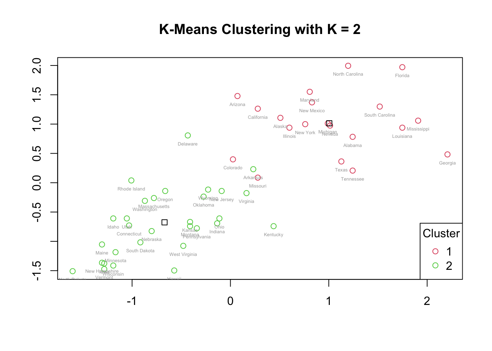
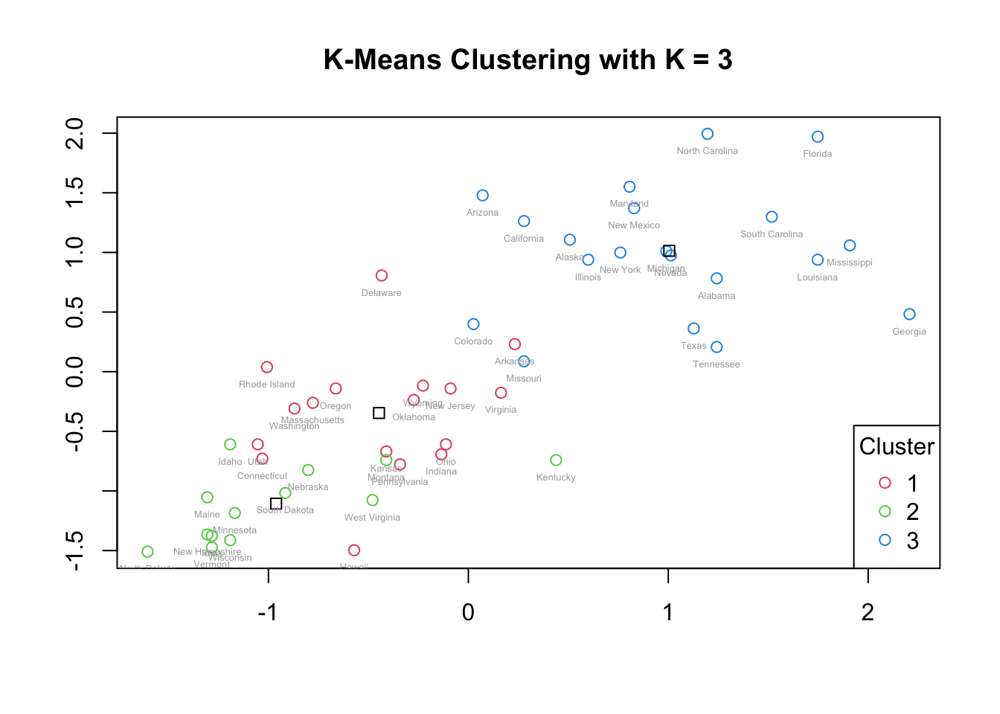
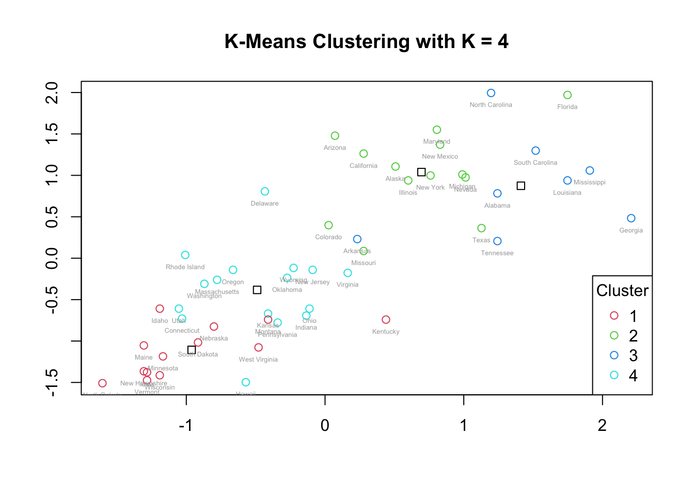
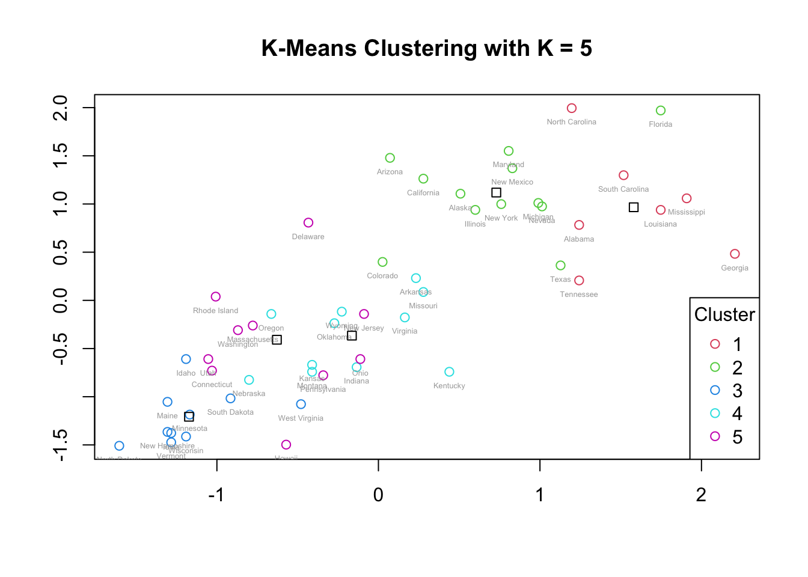
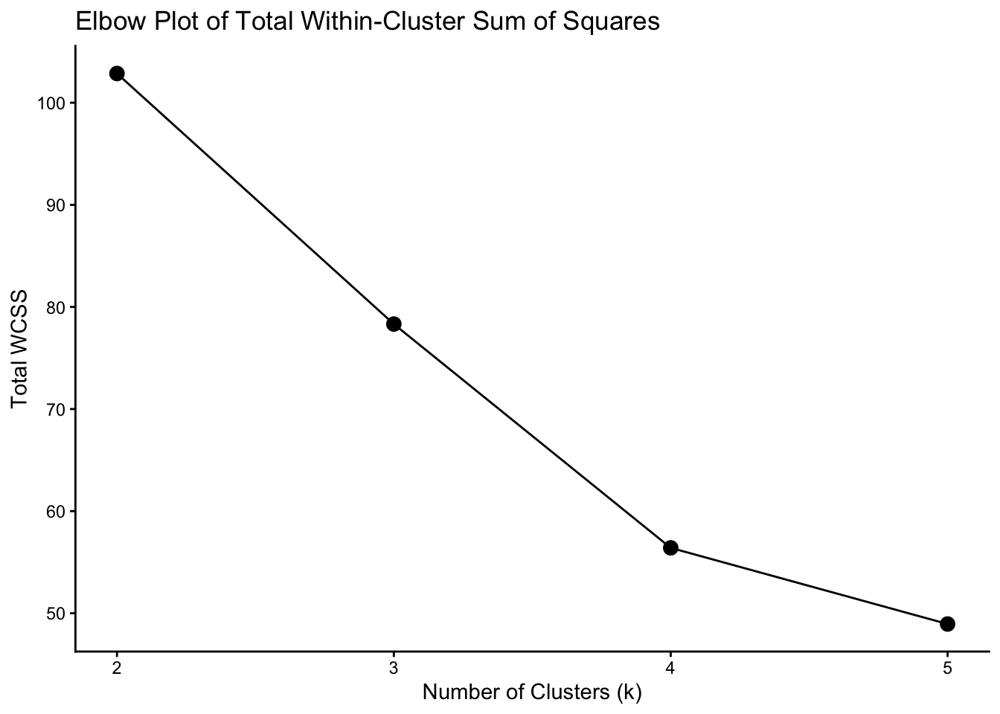
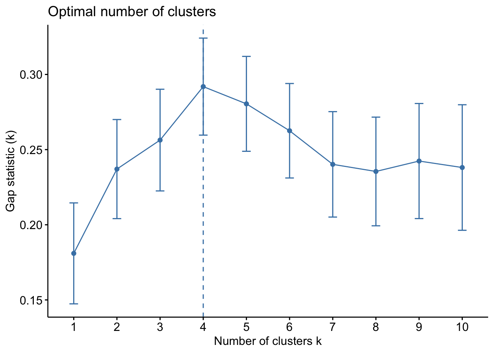
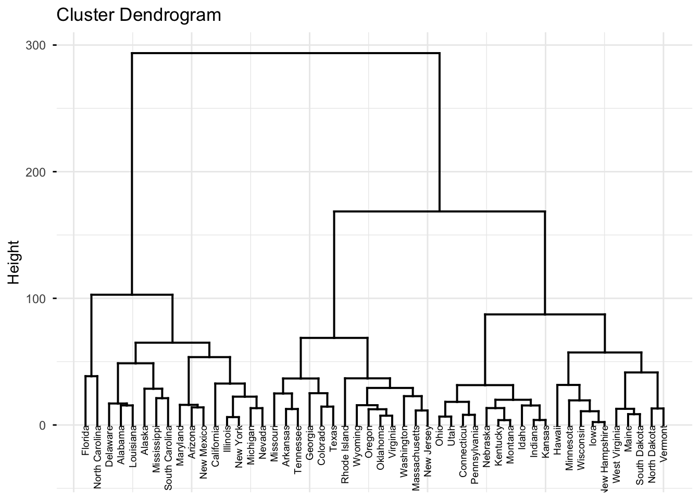
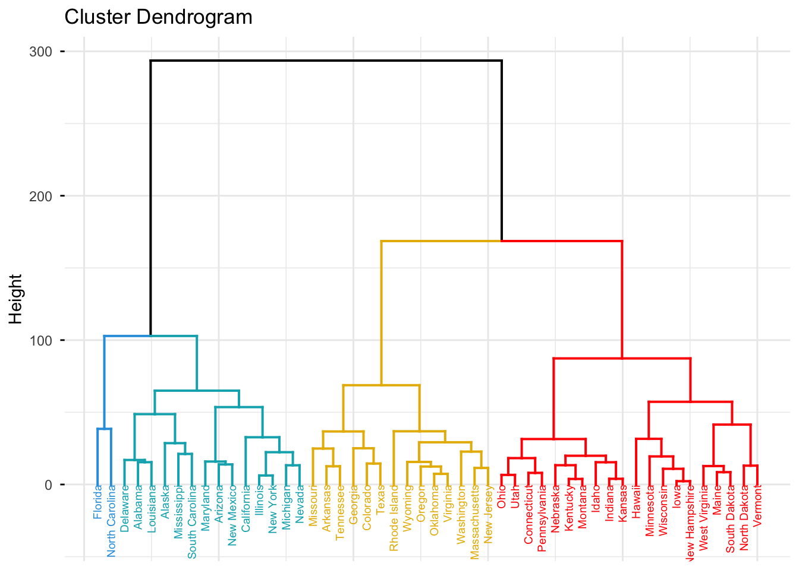
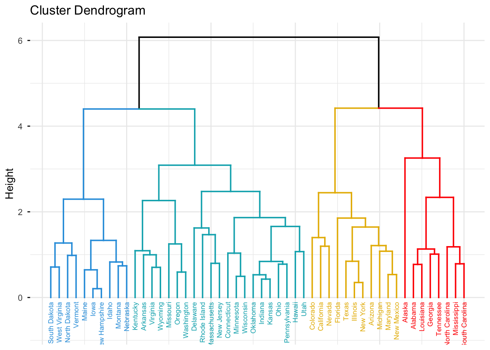

library(tidyverse)
library(factoextra)
library(cluster)Crime Pattern Segmentation Across U.S. States Using Clustering
1 Introduction
This case study analyzes the USArrests dataset and explores crime-rate patterns across all 50 U.S. states using both K-means clustering and hierarchical clustering.
My goals are to:
- Identify natural groupings among states based on violent crime data
- Understand how Murder, Assault, UrbanPop, and Rape relate
- Determine an appropriate number of clusters for K-means
- Compare hierarchical clustering with and without scaling
More broadly, this project illustrates how unsupervised learning can uncover hidden structure in multivariate datasets, a skill applicable across many domains beyond criminal justice.
2 Setup
2.1 Load Libraries
2.2 Read and Examine the Data
Arrests <- read.csv("USArrests.csv", row.names = 1)
head(Arrests)summary(Arrests) Murder Assault UrbanPop Rape
Min. : 0.800 Min. : 45.0 Min. :32.00 Min. : 7.30
1st Qu.: 4.075 1st Qu.:109.0 1st Qu.:54.50 1st Qu.:15.07
Median : 7.250 Median :159.0 Median :66.00 Median :20.10
Mean : 7.788 Mean :170.8 Mean :65.54 Mean :21.23
3rd Qu.:11.250 3rd Qu.:249.0 3rd Qu.:77.75 3rd Qu.:26.18
Max. :17.400 Max. :337.0 Max. :91.00 Max. :46.00 The USArrests dataset contains four variables for each of the 50 states:
- Murder: Murder arrests per 100,000
- Assault: Assault arrests per 100,000
- UrbanPop: Percentage of the population living in urban areas
- Rape: Rape arrests per 100,000
3 K-Means Clustering
In this section, I use the kmeans() function to perform K-means clustering on the scaled USArrests data with k = 2, 3, 4, and 5. I then interpret and compare the results for each k and select a preferred number of clusters.
3.1 Methodology and Parameter Choices
To ensure comparability across variables with different scales, I create a standardized version of the data.
After I scale the arrest data each variable has mean 0 and standard deviation 1. This ensures that variables with larger variance do not distort the results.
scaledArrests <- scale(Arrests)set.seed(1) # for reproducibilityIn all K-means runs, I use:
centers = kto specify the number of clustersnstart = 20to run the algorithm from 20 random initial configurations
Using a larger value of nstart helps avoid local optima and is recommended in practice.
3.2 K = 2
km.out2 <- kmeans(scaledArrests, centers = 2, nstart = 20)
plot(scaledArrests, col = km.out2$cluster + 1,
main = "K-Means Clustering with K = 2",
xlab = "", ylab = "")
points(km.out2$centers, pch = 0, col = "black")
text(scaledArrests, labels = rownames(scaledArrests),
pos = 1, cex = 0.4, col = "darkgray")
legend("bottomright", legend = c("1", "2"),
col = c(2:3), pch = 1, title = "Cluster")
Cluster counts:
table(km.out2$cluster)
1 2
20 30 3.2.1 Interpretation: K = 2
For k = 2, the data are divided into two clusters of 20 and 30 states. On the scatterplot:
- The points in Cluster 2 are more closely spaced, which suggests that these states share more similar values for the four crime variables.
- The points in Cluster 1 are more spread out, indicating greater variability within that cluster.
The centroids (plotted as squares) show the average position of each cluster. Points that are farther from the centroid differ more from the typical patterns within their cluster. The two clusters are visually distinct, indicating a reasonable separation between higher-crime and lower-crime states, although this is a very coarse segmentation.
3.3 K = 3
km.out3 <- kmeans(scaledArrests, centers = 3, nstart = 20)
plot(scaledArrests, col = km.out3$cluster + 1,
main = "K-Means Clustering with K = 3",
xlab = "", ylab = "")
points(km.out3$centers, pch = 0, col = "black")
text(scaledArrests, labels = rownames(scaledArrests),
pos = 1, cex = 0.4, col = "darkgray")
legend("bottomright", legend = c("1", "2", "3"),
col = c(2:4), pch = 1, title = "Cluster")
table(km.out3$cluster)
1 2 3
17 13 20 3.3.1 Interpretation: K = 3
For k = 3, the cluster with the largest membership (Cluster 3) appears at the upper-right region of the plot, representing states with generally higher crime rates. This cluster is more dispersed, indicating greater variability in crime patterns among those states.
The other two clusters are smaller and closer together. Their centroids are relatively near one another, suggesting that these two clusters share more similar crime-level characteristics and differ from the high-crime cluster. However, some overlap between the two smaller clusters is visible, potentially driven by outliers that pull centroids closer together.
3.4 K = 4
km.out4 <- kmeans(scaledArrests, centers = 4, nstart = 20)
plot(scaledArrests, col = km.out4$cluster + 1,
main = "K-Means Clustering with K = 4",
xlab = "", ylab = "")
points(km.out4$centers, pch = 0, col = "black")
text(scaledArrests, labels = rownames(scaledArrests),
pos = 1, cex = 0.4, col = "darkgray")
legend("bottomright", legend = c("1", "2", "3", "4"),
col = c(2:5), pch = 1, title = "Cluster")
table(km.out4$cluster)
1 2 3 4
13 13 8 16 3.4.1 Interpretation: K = 4
For k = 4, the upper-right portion of the plot (where states have higher crime rates) splits into two distinct clusters (Clusters 2 and 3). Their centroids are close, suggesting related but meaningfully distinct subgroups of higher-crime states.
The bottom-left region, corresponding to lower crime rates, also splits into two clusters (Clusters 1 and 4). These two clusters are closer to each other than to the high-crime clusters, reflecting their shared lower crime patterns.
There is still visible separation between high- and low-crime regions of the plot, but some cluster overlap appears, partly due to outliers. For example, certain states in the green and blue clusters (top-right) appear to overlap with cyan or red states, indicating that some observations lie between group centers.
3.5 K = 5
km.out5 <- kmeans(scaledArrests, centers = 5, nstart = 20)
plot(scaledArrests, col = km.out5$cluster + 1,
main = "K-Means Clustering with K = 5",
xlab = "", ylab = "")
points(km.out5$centers, pch = 0, col = "black")
text(scaledArrests, labels = rownames(scaledArrests),
pos = 1, cex = 0.4, col = "darkgray")
legend("bottomright", legend = c("1", "2", "3", "4", "5"),
col = c(2:6), pch = 1, title = "Cluster")
table(km.out5$cluster)
1 2 3 4 5
7 12 10 11 10 3.5.1 Interpretation: K = 5
For k = 5, the top-right region (higher-crime states) remains split into two clusters, similar to k = 4. However, the bottom-left region (lower-crime states) is now split into three clusters.
The three lower-crime clusters have centroids that are close together and substantial overlap in their points, suggesting that the additional clusters do not meaningfully separate different crime profiles. For example, Clusters 4 and 5 appear very similar, with heavily overlapping observations. This indicates that k = 5 may be overfitting, creating clusters that do not represent distinct, interpretable groupings.
4 Cluster Cardinality
Cluster cardinality is the number of states in each cluster. It can be helpful to examine cardinality to determine if the data are well distributed across the clusters.
From the K-means results:
- K = 2
- Cluster 1: 20 states
- Cluster 2: 30 states
- K = 3
- Cluster 1: 17 states
- Cluster 2: 13 states
- Cluster 3: 20 states
- K = 4
- Cluster 1: 13 states
- Cluster 2: 13 states
- Cluster 3: 8 states
- Cluster 4: 16 states
- K = 5
- Cluster 1: 7 states
- Cluster 2: 12 states
- Cluster 3: 10 states
- Cluster 4: 11 states
- Cluster 5: 10 states
These results confirm that each clustering accounts for all 50 states (no states are dropped or duplicated). Some configurations, such as k = 3 and k = 4, show relatively balanced cluster sizes, while k = 5 produces a smaller cluster (7 states), which may be more sensitive to outliers.
5 Within-Cluster Sum of Squares (WCSS)
Within-cluster variation is a metric that gauges the extent to which states within a cluster differ from each other. A good clustering seeks to minimize within-cluster variation. This is often measured using the within-cluster sum of squares (WCSS).
For each K-means solution, I examined the total WCSS and individual cluster WCSS values. In general:
5.0.1 Within-Cluster Sum of Squares by K
| K | Cluster 1 | Cluster 2 | Cluster 3 | Cluster 4 | Cluster 5 |
|---|---|---|---|---|---|
| 2 | 56.11 | 46.75 | — | — | — |
| 3 | 19.62 | 11.95 | 46.75 | — | — |
| 4 | 8.32 | 19.92 | 16.21 | 11.95 | — |
| 5 | 7.44 | 6.13 | 9.33 | 7.79 | 18.26 |
For k = 2, one cluster has higher WCSS than the other, indicating more spread in that cluster.
For k = 3 and k = 4, WCSS decreases as k increases, as expected, but the marginal gain diminishes.
For k = 5, one cluster has a much higher WCSS than the others, indicating that the cluster is quite dispersed.
To summarize the overall trade-off between number of clusters and WCSS, I use an elbow plot.
5.1 Elbow Plot
wss <- c(km.out2$tot.withinss,
km.out3$tot.withinss,
km.out4$tot.withinss,
km.out5$tot.withinss)
wss_df <- tibble(clusters = 2:5, wss = wss)
ggplot(wss_df, aes(x = clusters, y = wss)) +
geom_line() +
geom_point(size = 3) +
theme_classic() +
ggtitle("Elbow Plot of Total Within-Cluster Sum of Squares") +
xlab("Number of Clusters (k)") +
ylab("Total WCSS")
The elbow plot shows a noticeable bend at k = 4, suggesting that increasing the number of clusters beyond 4 leads to diminishing returns in reducing within-cluster variation.
5.2 Gap Statistic
set.seed(1)
gap_stat <- clusGap(scaledArrests,
FUN = kmeans,
nstart = 20,
K.max = 10,
B = 50,
verbose = FALSE)
fviz_gap_stat(gap_stat)
The gap statistic supports k in the range of 3–4, indicating that both 3 and 4 clusters offer reasonable structure, with k = 4 providing a slightly better balance between fit and complexity.
6 Cluster Profiles: Mean Crime Rates
To better understand what differentiates the clusters, I examine the mean values of each variable by cluster.
aggregate(Arrests, by = list(cluster = km.out2$cluster), mean)aggregate(Arrests, by = list(cluster = km.out3$cluster), mean)aggregate(Arrests, by = list(cluster = km.out4$cluster), mean)aggregate(Arrests, by = list(cluster = km.out5$cluster), mean)6.0.1 Interpretation of Cluster Means
From the original tables:
- For k = 2, Cluster 1 has substantially higher averages for Murder, Assault, and Rape than Cluster 2, while UrbanPop differs less dramatically. This suggests that overall violent crime is not tightly coupled to urbanization level across all states.
- For k = 3 and k = 4, there is a clear ordering of clusters from lowest to highest crime, with one cluster consistently representing the highest-crime states, and another representing the lowest-crime states.
- For k = 5, Cluster 2 has the highest crime rates, and Cluster 1 also has elevated crime levels, but once again, the average UrbanPop does not consistently align with higher crime, reinforcing that urbanization percentage is not the primary driver of violent crime rates in this dataset.
7 Choosing K
Taking into account:
- Visual separation of clusters
- Cluster cardinality
- Within-cluster variation (WCSS)
- Elbow plot
- Gap statistic
- Interpretability of cluster means
I choose k = 4 as the preferred K-means solution. It provides:
- Clear separation between high- and low-crime states
- Reasonably balanced cluster sizes
- Meaningful differences in average crime rates across clusters
- An elbow in the WCSS curve, indicating a good trade-off between model complexity and fit
8 Hierarchical Clustering
Next, I perform hierarchical clustering using complete linkage and Euclidean distance, both with and without scaling.
8.1 Complete Linkage on Unscaled Data
hc.complete <- hclust(dist(Arrests), method = "complete")
fviz_dend(hc.complete,
cex = 0.5, # label size
ggtheme = theme_minimal())
8.1.1 Cutting the Dendrogram into 4 Clusters
fviz_dend(hc.complete, k = 4,
cex = 0.5,
k_colors = c("#2E9FDF", "#00AFBB", "#E7B800", "red"),
color_labels_by_k = TRUE,
ggtheme = theme_minimal())
Using the unscaled data, the hierarchical clustering groups states into four clusters (as described above). These groupings largely reflect differences in crime levels and, to some extent, regional patterns.
8.2 Complete Linkage on Scaled Data
hc.complete2 <- hclust(dist(scaledArrests), method = "complete")
fviz_dend(hc.complete2, k = 4,
cex = 0.5,
k_colors = c("#2E9FDF", "#00AFBB", "#E7B800", "red"),
color_labels_by_k = TRUE,
ggtheme = theme_minimal())
8.2.1 Effect of Scaling
Scaling the variables before computing distances has a strong impact on hierarchical clustering:
- Each variable contributes equally to the distance computation.
- Variables with large numeric ranges (such as Assault) no longer dominate the clustering.
- Clusters now reflect a more balanced combination of all four variables.
In my opinion, the variables should be scaled before computing inter-observation dissimilarities in this context, because Murder, Assault, UrbanPop, and Rape are on different scales, and I want each to have a comparable impact on the clustering.
9 Comparison of Methods
Comparing:
- K-means clustering with k = 2–5
- Hierarchical clustering with and without scaling
I find that:
- K-means with k = 4 produces a useful segmentation of states into four groups with distinct crime profiles and balanced cluster sizes.
- Hierarchical clustering on scaled data produces clear dendrogram structure and visually distinct clusters, and is helpful for understanding nested relationships and exploring different numbers of clusters.
- Scaling is crucial for both K-means and hierarchical clustering to prevent high-variance variables (such as Assault) from overwhelming other variables in the distance calculations.
10 Conclusion
Through K-means and hierarchical clustering of the USArrests dataset, I uncovered distinct groupings of U.S. states based on violent crime patterns:
- K-means with k = 4 offers a good balance between interpretability and compactness, segmenting states into low-, medium-, and high-crime groups with clear differences in Murder, Assault, and Rape rates.
- UrbanPop does not consistently track with crime rates, suggesting that simple urbanization percentage is not the main driver of violent crime levels in this dataset.
- Hierarchical clustering with scaled data provides additional insight into how states cluster at different levels of granularity.
This analysis demonstrates how clustering methods can be applied to real-world public safety data to reveal underlying patterns and support exploratory policy analysis or further modeling. The techniques demonstrated here are also broadly applicable to many fields, from customer segmentation and risk analysis to healthcare and urban planning, wherever grouped behavior needs to be uncovered.